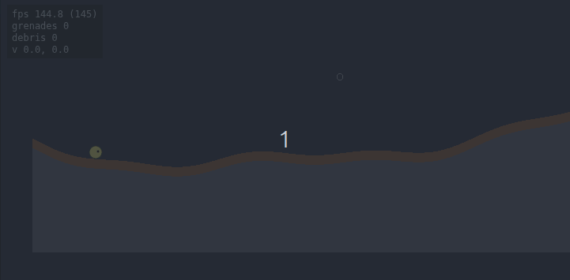

Pixel-perfect spatial reasoning for Phaser v4: chunked-bitmap destructible terrain, alpha-aware sprite collision, and procedural-mask utilities.

Status: v3.1.1 — stable public surface; mass-based fluid simulation (water/oil/gas) with continuous Float32 mass per cell. Pressure emerges from the over-compression overflow rule, so surfaces actually flatten. Lateral reach spreads up to 25 cells per tick (~25× gravity, v3.1.1), with adaptive throttle to 5 above ~8 000 active cells. Pool-based fast path (v3.1): above ~10 000 active cells the sim flood-fills connected components and replaces per-cell mass transfer for pool interiors with a single uniform-distribution pass — keeps the larger reach affordable on settled bodies. Sand / fire / static stay binary (v2.x rules preserved). Cross-material density swaps still atomic. Sparse active-cell tracking (v2.4) + fast-path direct array access (v3.0.3) keep step cost proportional to moving cells. Demos 03/07/09 carry annotated @snippet blocks rendered as ready-to-paste cards (v2.6); a top-level recipes index aggregates them. Local development only (not on npm yet).
A library for Phaser v4 games that need pixel-accurate world manipulation:
The bitmap is the source of truth — all visuals and physics colliders are derived from it. Mutate the bitmap; everything else updates automatically at end-of-frame.
Phaser v4 + Phaser Box2D are both production-ready, but no maintained library exists for pixel-perfect spatial reasoning on this stack. This fills the gap.
The examples/ folder is built into docs/ and committed; run them locally with npm run dev, or browse the deployed copies at https://dzyamik.github.io/pixel-perfect/. Every demo's nav has a "view source" link straight to its main.ts.
| Demo | What it shows |
|---|---|
| 01 — basic rendering | TerrainRenderer painting a procedural bitmap |
| 02 — click to carve | input + carve + per-chunk repaint |
| 03 — physics colliders | Box2D world, drop balls, debug overlay |
| 04 — falling debris | DebrisDetector + dynamic bodies, L-shaped pieces falling |
| 05 — pixel-perfect sprite | drag a circle onto a ring + terrain; bbox vs pixel-perfect |
| 06 — worms-style | walking circle + grenades that carve and detach cliff slabs |
| 07 — image-based terrain | stamp a PNG / canvas alpha mask onto the bitmap, then carve |
| 08 — sprite playground | upload your own PNG; cyan outline traces the alpha mask |
| 09 — falling sand sandbox | five fluid kinds (sand / water / oil / gas / fire) + flammable wood + ball drop |
import * as Phaser from 'phaser';
import { PixelPerfectPlugin } from 'pixel-perfect';
class GameScene extends Phaser.Scene {
create() {
const terrain = this.pixelPerfect.terrain({
width: 512,
height: 256,
chunkSize: 64,
x: 64,
y: 32,
materials: [
{
id: 1,
name: 'dirt',
color: 0x8b5a3c,
density: 1,
friction: 0.7,
restitution: 0.1,
destructible: true,
destructionResistance: 0,
},
],
// worldId: yourBox2DWorld, // optional — physics integration
});
// Carve / deposit at any time. End-of-frame, the plugin
// flushes pending physics rebuilds and repaints dirty chunks.
this.input.on('pointerdown', (p: Phaser.Input.Pointer) => {
terrain.carve.circle(p.worldX, p.worldY, 16);
});
}
}
new Phaser.Game({
type: Phaser.AUTO,
width: 640,
height: 360,
scene: GameScene,
plugins: {
scene: [
{
key: 'PixelPerfectPlugin',
plugin: PixelPerfectPlugin,
mapping: 'pixelPerfect',
},
],
},
});
For physics integration (debris, falling chunks, sprite collision), see the demos under examples/03-physics/ and examples/04-falling-debris/.
Generated by TypeDoc from the src/ TSDoc comments. Built locally
via npm run build into docs/api/ and deployed alongside the demos
at https://dzyamik.github.io/pixel-perfect/api/.
See docs-dev/02-roadmap.md. Current state of in-flight work and known limitations live in docs-dev/PROGRESS.md.
See docs-dev/01-architecture.md. Three layers, depend downward only:
src/phaser/ — plugin and GameObjects.src/physics/ — Box2D adapter.src/core/ — pure TypeScript, zero runtime deps.Patches and bug reports welcome. See
CONTRIBUTING.md for the dev workflow and
.github/ISSUE_TEMPLATE/ for bug / feature
templates. Project conduct: CODE_OF_CONDUCT.md.
MIT.